De la retroproiector la slide-uri animate: învățăm ce este o prezentare, cum arată PowerPoint pe dinăuntru și cum construim și susținem o prezentare care chiar are impact la public.
În fiecare zi transmitem idei celor din jur — la școală, acasă, în proiecte. O prezentare este modul organizat prin care facem asta cât mai clar posibil.
Prezentarea este o expunere pe scurt a unor informații legate de o anumită temă, organizată după un plan stabilit anterior. Pentru ca informațiile să fie bine înțelese și reținute, modalitatea de prezentare trebuie să fie vizuală: informație sintetizată și organizată grafic, cu imagini și text.
Înainte de PowerPoint, oamenii foloseau alte instrumente — unele încă apar și azi în școli sau firme. Iată cum funcționează fiecare și când e utilă.
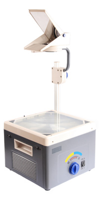
Informația se scrie sau se tipărește pe folii transparente (acetate). Fiecare folie se așază pe sticla unui retroproiector — o lampă puternică proiectează imaginea pe un ecran aflat de obicei în spatele prezentatorului. Avantaje: ușor de pregătit, ieftin. Dezavantaje: greu de actualizat, fără animații sau sunet, trebuie să schimbi manual fiecare folie.
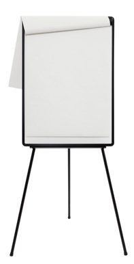
Informația e pregătită pe foi mari (tipărite sau scrise de mână), fixate pe un suport numit șevalet rotafoliu (flipchart). Prezentatorul răsfoiește foile pe măsură ce avansează. Avantaje: nu are nevoie de curent, publicul poate vedea totul de aproape. Dezavantaje: greu de transportat, spațiu limitat pe pagină, nu se pot actualiza ușor.
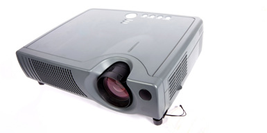
Se creează cu o aplicație de prezentare (PowerPoint, Keynote, Google Slides etc.) pe calculator, tabletă sau telefon. Se afișează pe ecranul dispozitivului sau se proiectează cu un videoproiector / ecran mare. Avantaje: animații, sunet, video, hiperlinkuri, actualizare rapidă, note pentru vorbitor. Dezavantaje: depinde de echipamente și de energie electrică.
Prin complexitatea ei, are cel mai bun impact la public. E organizată ca o înlănțuire de imagini numite diapozitive (slide-uri), fiecare afișând treptat informația.
Citește afirmația de pe carte și decide: descrie o prezentare electronică sau una pe hârtie? Discutați împreună de ce ați ales fiecare variantă!
Microsoft PowerPoint este o componentă a pachetului Microsoft Office, dedicată realizării și expunerii prezentărilor electronice. Din punctul de vedere al aplicației, o prezentare electronică este un document salvat într-un fișier cu extensia .pptx, .ppt sau .pptm.
Există mai multe aplicații dedicate prezentărilor electronice:
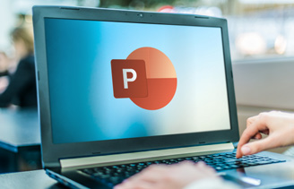
Lansarea în execuție se face din meniul Start, accesând All Apps → PowerPoint, sau tastând „PowerPoint" și apăsând Enter.
Aplicația se deschide cu un ecran de start, de unde poți alege:
crearea unei prezentări noi, necompletate — se alege „Prezentare necompletată”;
crearea unei prezentări noi folosind un șablon predefinit;
deschiderea unei prezentări realizate anterior, din lista propusă.
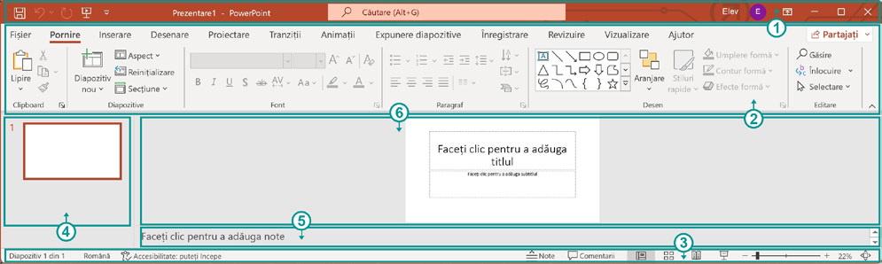
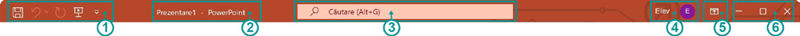
Panglica adună meniurile și comenzile aplicației, organizate pe file (Tabs), pe tipuri de activități.
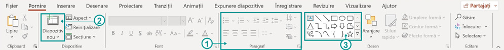
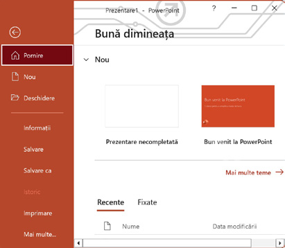
Comenzi pentru fișierul prezentare: creare, deschidere, salvare, export, partajare, tipărire, opțiuni. Deschide o vizualizare specială, numită Backstage.
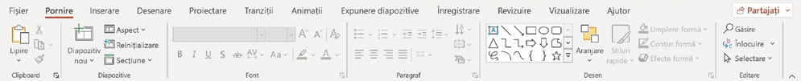
Comenzi de bază: lipire, diapozitiv nou, formatare font și paragraf, forme simple, găsire/înlocuire. E fila pe care o folosești cel mai des când editezi conținutul.
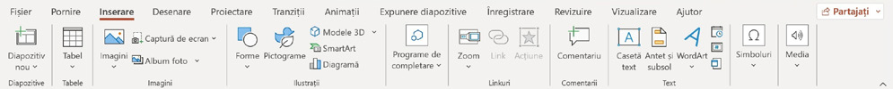
Adaugi conținut pe diapozitiv: tabele, imagini, forme, SmartArt, diagrame, linkuri, casete de text, WordArt, sunet și video.
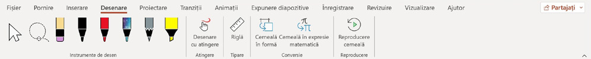
Instrumente de desen (creion, marker, evidențiator) și „cerneală digitală”. Pe tablete sau ecrane tactile poți desena cu degetul sau creionul digital.
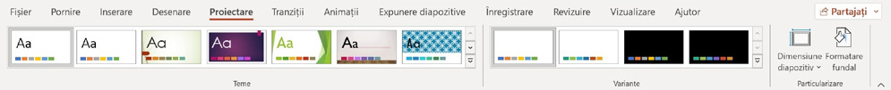
Aici alegi tema (culori + fonturi + efecte), variantele de culoare, dimensiunea diapozitivului și formatarea fundalului. (În engleză: Design)
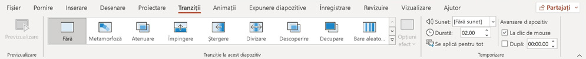
Stabilește cum trece un diapozitiv la următorul (efecte de tranziție, durată, sunet). Poți aplica același efect la toată prezentarea.
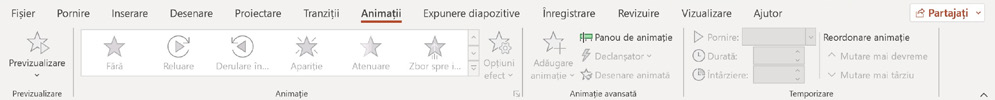
Animezi obiectele de pe diapozitiv (apariție, mișcare, dispariție). Se selectează obiectul, apoi se alege efectul și se reglează temporizarea.
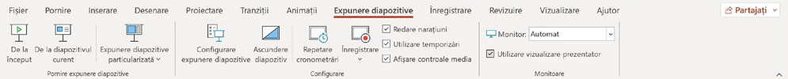
Pornește expunerea (de la început sau de la diapozitivul curent), configurează monitorul prezentatorului, temporizatoarele și opțiunile de redare.
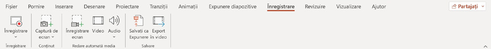
Înregistrezi narațiunea, captura de ecran sau exporti prezentarea ca video / fișier de expunere (.ppsx).
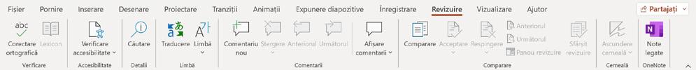
Verificare ortografică, accesibilitate, comentarii, traducere și comparare între două versiuni ale prezentării.
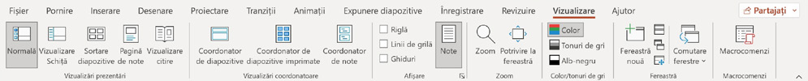
Schimbă modul de vizualizare: Normal, Sortare diapozitive, Pagină de note, Vizualizare citire; afișează rigla, ghidajele, zoom.
Se află în partea de jos a ecranului PowerPoint. Conține informații utile și butoane rapide pentru navigare și setări.
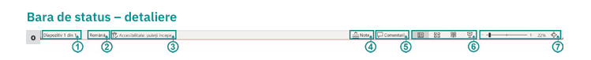
O prezentare electronică conține mai multe diapozitive, pe care sunt inserate informații. Fiecare diapozitiv conține mai multe obiecte care ilustrează ideile: casete de text, imagini, sunete, tabele, legături (hiperlinkuri), forme diverse.
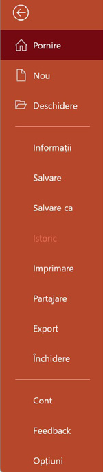
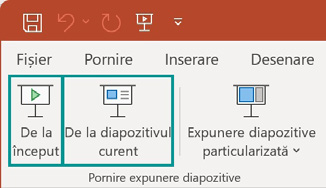
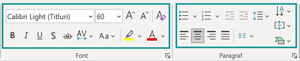
Inserare → Casetă text. Formatezi din fila Pornire, grupurile Font și Paragraf.
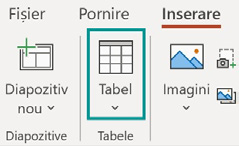
Inserare → Tabel. Alegi numărul de linii și coloane trecând cu mouse-ul.
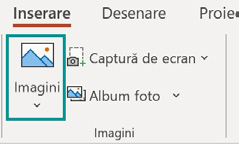
Inserare → Imagini, apoi alegi sursa: local, bancă de imagini sau internet.
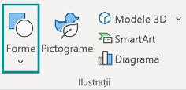
Inserare → Forme, apoi alegi forma dorită din meniu.
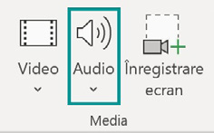
Inserare → Audio — sunet existent sau înregistrat cu microfonul.
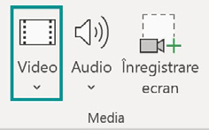
Inserare → Video — clip local, din bancă sau de pe internet.
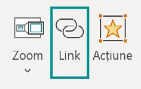
Inserare → Link — hiperlink către pagini web sau documente.
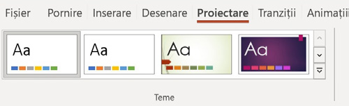
Fila Proiectare, grupul Teme — culori, fonturi și efecte pentru un aspect profesional.
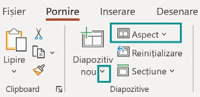
Formatarea, poziționarea și substituenții (containere) pentru conținutul unui diapozitiv.
Materialele de pe internet (texte, imagini, video, sunete) care nu sunt creații proprii pot fi folosite gratuit doar dacă titularul dreptului de autor permite acest lucru. Respectarea drepturilor de autor este obligatorie — e o chestiune legală, dar și de respect față de cei care investesc timp, muncă și bani.
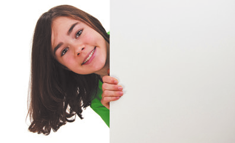
Dacă folosești materiale de pe internet, cărți sau publicații, menționează întotdeauna, într-o secțiune Bibliografie, sursa (autor, titlu, site web).
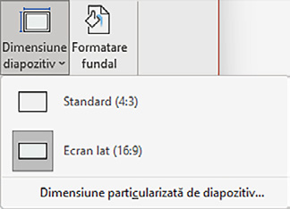
Cum ajungi: fila Proiectare (Design) → butonul Dimensiune diapozitiv. Alegi Standard (4:3) sau Ecran lat (16:9), potrivit proiectorului sau ecranului pe care vei expune.
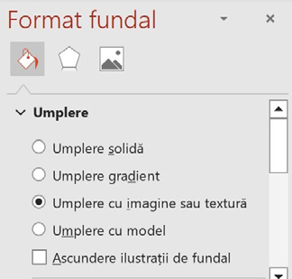
Cum ajungi: click-dreapta pe diapozitiv → Formatare fundal, sau fila Proiectare → Formatare fundal. Alegi umplere solidă, gradient, imagine/textură sau model.
Cum ajungi: fila Proiectare (Design) → grupul Teme. Alege o temă gata făcută — culori, fonturi și efecte unitare pentru toată prezentarea.
Cum ajungi: selectezi textul sau caseta de text → apare fila suplimentară Format formă (sau din fila Pornire, grupurile Font și Paragraf).
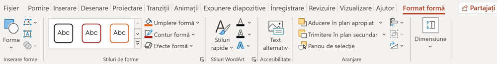
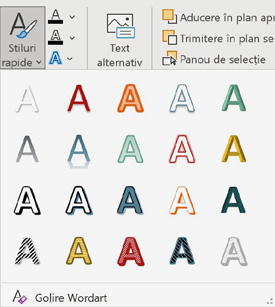
Literele pot primi „corp” — se pot transforma pentru un aspect 3D.
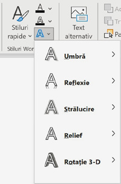
Umbre, reflexii, străluciri și alte efecte pentru text.
Cum ajungi: click-dreapta pe orice obiect → alege panoul potrivit: Formatare formă (pentru text, tabele, forme), Formatare Video sau Formatare imagine. Pentru fundal: click-dreapta pe diapozitiv → Formatare fundal.
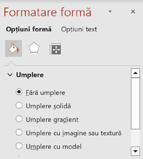
Dimensiune, umplere, contur, efecte. Se deschide și din fila Format formă când obiectul e selectat.
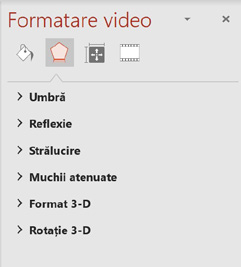
Umbră, reflexie, strălucire, format 3-D. Apare când selectezi un clip video.
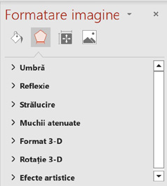
Muchii atenuate, efecte artistice, corecții de culoare. Apare când selectezi o imagine.
Animația se aplică unui obiect selectat, din fila Animații. Se poate previzualiza, iar pentru unele tipuri se configurează și „Opțiuni efect”.
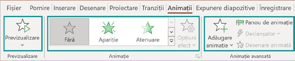
Tranziția apare la încărcarea unui diapozitiv, din fila Tranziții → grupul „Tranziție la acest diapozitiv”.
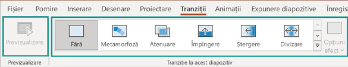
Publicul citește mai întâi ecranul, apoi ascultă prezentatorul. Prea multă informație obosește privitorul și îl împiedică să înțeleagă mesajul.
Un text prea mic pentru sala respectivă înseamnă că unii nu vor putea urmări deloc prezentarea.
Un grafic cu prea multe informații devine greu de înțeles. Se expun mai întâi rezultatele/concluziile, apoi se detaliază.
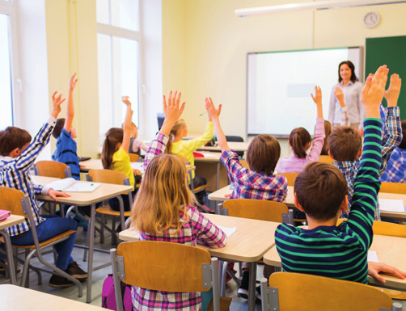
Verifică din timp sala și echipamentele (calculator, videoproiector) — situațiile în care ceva nu funcționează pot compromite prezentarea. Verifică și culorile de pe ecranul de proiecție, care pot fi diferite față de cele de pe monitor.
În timpul prezentării: ținută decentă, stai în picioare, aproape de public, ține publicul concentrat pe toată durata. Nu se bea apă în timpul expunerii — se folosesc pauzele pentru asta; apa lângă echipamente e un risc. Elimină ticurile deranjante (jocul cu părul, pixul, guma). Discurs corect gramatical, propoziții scurte, termeni clari; vorbește rar și suficient de tare; folosește comparații și analogii. Exersează dinainte, ca discursul să se încadreze în timpul alocat, și urmărește tot timpul comportamentul publicului.
E o chestiune de responsabilitate și respect — persoana următoare poate rămâne fără timp.
Prezentatorul trebuie să se ghideze după informație și să vorbească liber, conectat cu publicul — nu să citească ecranul.
Comunicarea și dialogul cu publicul mențin atenția pe toată durata prezentării.
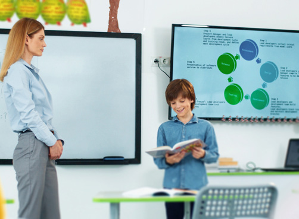
Răspunde cu Da / Nu sau alege varianta corectă. La fiecare întrebare poți cere un indiciu. La final vezi scorul.